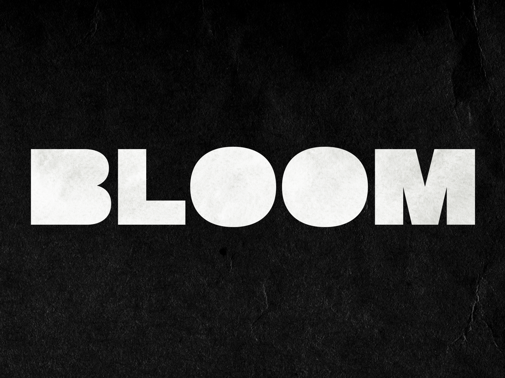

Bloom est un court métrage en noir et blanc de 3mn, il raconte l'histoire d'un artiste
n'arrivant pas à créer.
Le film est réalisé en stop motion, une technique qui permet de faire bouger des objets avec une succession de photographies.
J'ai toujours aimé travailler en miniature, et
L'utilisation de la stop motion permet de pouvoir créer une atmosphère la plus étrange possible, j'ai pu faire un décor froid et minimaliste en polystyrène ainsi que le personnage principal inexpressif avec son visage grotesque aux formes très marquées. Le noir et blanc ajoute à l'aspect inquétant du film, avec une seule source lumineuse et des noirs tres profonds.
Ma source d'inspiration principale était les premiers courts métrages en stop motion de Marc Caro et Jean Pierre jeunet réalisés dans les années 80.
- 